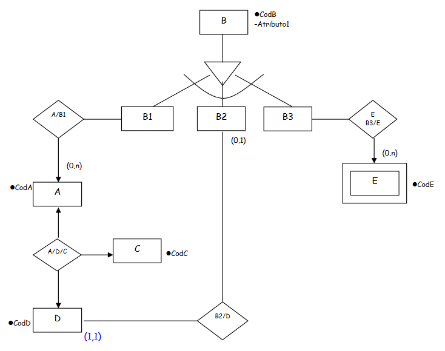

Ejemplo 1.
-

pedido(nuped, fec, nuprov, nomprov, dir, nuprod, desc, pu, cant, tot, imptot)
- 1FN
- Una relación está en 1FN si cumple la propiedad de que sus dominios no tienen elementos que a su vez sean conjuntos.
Toda relación Normalizada o sea con valores atómicos de los atributos está en 1FN
pedido(nuped, fec, nuprov, nomprov, dir, imptot)
producto(nuped, nuprod, desc, pu, cant, tot)
- 2FN
-
Una relación está en 2FN si está en 1FN y si o solo si los atributos
NO llave son funcionales o completamente dependientes de la llave primaria.
pedido(nuped, fec, nuprov, nomprov, dir, imptot)
ped_prod(nuped, nuprod, cant, tot)
producto(nuprod,desc, pu)
- 3FN
-
Una relación está en 3FN si está en 2FN si y solo si los atributos
NO llave son independientes de cualquier otro atributo NO llave primaria
pedido(nuped, nuprov, fec, imptot)
proveed(nuprov, nomprov, dir)
ped_prod(nuped, nuprod, cant, tot)
producto(nuprod,desc, pu)
Ejemplo 2.
Consideremos el documento ORDEN DE COMPRA de la figura 4, usado para colocar una orden depedido al proveedor de discos compactos.
OrdenDeCompra(ORD-NO, ORD-DATE, PROV-NO, PROV-NAME, PROV-DIR, PROV-NIT, CODIGO, TITULO, CANT, VR-UNIT)
Figura 4
Incluso las formas no normalizadas deben tener una llave. En el ejemplo de arriba, podemos deducirque ORD-NO es la llave. Las llaves usualmente son subrayadas durante el análisis ARD.
1FN: Separar el grupo repetitivo:
- En la lista de arriba, los ítems después de PROV-NIT son repetitivos, esto quiere decir, que para unamisma orden aparecen varias veces,
dado que en una misma orden se pueden encargar varias categorías, o varios títulos de la misma categoría.
Los grupos repetitivos deben ser separados y ser escritos como un grupo independiente con su respectiva llave. Este grupo debe relacionarse con el grupo no repetitivoGRUPO 1(ORD-NO, ORD-DATE, PROV-NO , PROV-NAME, PROV-DIR, PROV-NIT)
GRUPO 2(ORD-NO, CODIGO, TITULO , CANT , VR-UNIT)
2FN: Separar dependencias de las llaves compuestas.
-
GRUPO 1(ORD-NO, ORD-DATE, PROV-NO , PROV-NAME, PROV-DIR, PROV-NIT)
GRUPO 2(ORD-NO, CODIGO, CANT)
GRUPO 3(CODIGO, TITULO, VR-UNIT)
3FN: Examinar las interdependencias entre los campos o atributos que no son llaves.
-
GRUPO 1(ORD-NO, ORD-DATE, PROV-NO)
GRUPO 2(ORD-NO, CODIGO, CANT)
GRUPO 3(CODIGO, TITULO, VR-UNIT)
GRUPO 1(PROV-NO, PROV-NAME, PROV-DIR, PROV-NIT)
Ejemplo 3.
Este es el diseño inicial de las FACTURAS, al cual debemos aplicarle la metodología de las formas normales para ver si se trata de un buen diseño.
1FN
-
FACTURA(Codigo_Factura, Código_cliente, Nombre_cliente, Direccion_cliente, Población_cliente, Fecha_factura, Forma_pago)
DETALLE_FACTURA(Codigo_Factura, Código_articulo, Descripcion , Cantidad, Importe, Tipo_IVA)
2FN
-
FACTURA(Codigo_Factura, Código_cliente, Nombre_cliente, Direccion_cliente, Población_cliente, Fecha_factura, Forma_pago, Tipo_IVA)
DETALLE_FACTURA(Codigo_Factura, Código_articulo, Cantidad, Importe)
ARTICULO(Código_articulo, Descripcion)
3FN
-
CLIENTE(Código_cliente, Nombre_cliente, Direccion_cliente, Población_cliente)
FACTURA(Codigo_Factura, Código_cliente, Fecha_factura, Forma_pago, Tipo_IVA)
DETALLE_FACTURA(Codigo_Factura, Código_articulo, Cantidad, Importe)
ARTICULO(Código_articulo, Descripcion)
Ejemplo 4.
Transforma este diagrama ER de una Base de Datos a su correspondiente modelo relacional:
1FN, 2FN, 3FN
TPINACOTECA: ( Nombre Pinacoteca, Dirección, Ciudad, MetrosCuadrados)
TCUADRO: ( CodCuadro, Técnica, Nombre, Dimensiones, Fecha creación, Nombre Pinacoteca(FK), CodPintor(FK))
TPINTOR: ( CodPintor, Nombre, Ciudad, Nacion, FechaNac, FechaMuerte, Nombre escuela(FK))
TMECENAS: ( Nombre mecenas, FechaNac, Nacionalidad, LugarNacimiento, FechaMuerte)
TESCUELA: ( Nombre escuela, FechaCreacion, PaisdondeSurgio)
TTener: ( CodPintor(FK), Nombre mecenas(FK), relación)
TEsMaestro: (CodPintor(FK), CodMaestro(FK))
Ejemplo 5.
Dado el esquema ER de la figura inferior, pásalo al modelo relacionar aplicando las reglas usuales dederivación, teniendo en cuenta que las entidades tienen los siguientes atributos:
-JUGADOR (DNI, NombreJugador, FechaNacimiento, Sueldo, Nacionalidad)
-EQUIPO (NombreEquipo, Ciudad, Presidente)
-PARTIDO (Código, Fecha, Resultado)
1FN, 2FN, 3FN
JUGADOR: ( DNI, NombreJugador, FechaNacimiento, Sueldo, Nacionalidad, NombreEquipo(FK))
EQUIPO: ( NombreEquipo, Ciudad, Presidente)
PARTIDO: (Código, Fecha, Resultado)
JUEGA: ( DNI(FK), Codigo(FK))
DISPUTA: (Código(FK) , NombreEquipo(FK))
Ejemplo 6.
Consideremos una base de datos en la que se relacionen distintos fabricantes de software con los programasque desarrollan, los comercios donde los venden y los clientes que los compran. Las relaciones entre ellos son:
-Cada fabricante se caracteriza por un identificador único, tiene un nombre y pertenece a un país.
-Todos los programas tienen un código que los distinguen de los demás. Además, tienen un nombre y unaversión. Por ejemplo, Microsoft Access 2000 tendría código. El código no sirve para distinguir cada CD deAccess 2000. Todos los CD de Access 2000 tendrían el mismo código.
-Los comercios tienen un código de identificación fiscal (CIF), único para cada uno, tienen un nombre yse ubican en una ciudad.
-Los clientes se caracterizan por su DNI, nombre y edad.
-Es necesario conocer el número de unidades de cada programa que se distribuye a cada comercio.
-Los clientes, una vez que adquieren el programa, se registran con el fabricante; el registro se puedehacer por diversos medios (Internet, tarjeta postal, teléfono, etc.) y debe quedar constancia del mismo.
-Cada fabricante puede desarrollar muchos programas.
-Los fabricantes se pueden aliar para desarrollar un mismo programa (por tanto, un programa puededesarrollarse por más de un fabricante).
-Un mismo programa se puede distribuir entre muchos comercios y, a su vez, cada comercio puederecibir distribución de muchos programas distintos.
-Un programa que se vende en un comercio puede registrarse a nombre de muchos clientes (por ejemplo, un determinado comercio puede vender muchas unidades de Microsoft Access 2000; cada una seregistraría a un cliente distinto).
-Un mismo cliente puede registrar muchos programas distintos adquiridos en el mismo o en distintoscomercios.
-Cada cliente que registra un programa, lo hace indicando el comercio donde lo adquirió. Por tanto, porcada cliente y programa sólo se puede indicar un comercio.
Teniendo en cuenta las especificaciones anteriores diseña un modelo conceptual empleando la técnica ERpara luego pasarlo al modelo relacional.
1FN, 2FN, 3FN
Fabricantes: ( DNI, NombreJugador, FechaNacimiento, Sueldo, Nacionalidad, NombreEquipo(FK))
Programa: ( Cod. programa, Nombre programa, Versión programa, Cantidad)
Cliente: ( DNI, Nombre, Edad)
Comercio: ( CIF, Nombre comercio, Ciudad)
Registro: (Modo registro, Fecha registro, Nombre comercio,DNI(FK), Cod. Fabricante(FK), Cod. programa(FK))
Venta: (DNI(FK), CIF(FK), Nombre programa(FK), Fecha venta, Importe)
Distribuir: (Nº unidades, CIF(FK), Cod. programa(FK))
Ejemplo 7.
Transforma el siguiente esquema ER extendido a un esquema relacional. Se deberá obtener la transformaciónque proporcione accesos a la base de datos más eficiente, teniendo en cuenta que los subtipos E1 y E2 sediferencian en muy pocos atributos y que siempre que se accede a la entidad E se querrá toda la información, tantola del supertipo como la de los subtipos.
1FN, 2FN, 3FN
TA: (CodA)
TB: ( CodB, CodA(FK))
TC: ( CodC)
TD: ( CodD, CodC(FK))
TE: ( CodE, tipo, Atributo3)
TF: ( CodF, CodE(FK), atributo2)
TA/F/C: ( CodA, CodC, CodF, atributo1)
Ejemplo 8.
Transforma el siguiente esquema ER a un esquema relacional. Se sabe que los subtipos de la entidad B tienenmuchos atributos distintos y que en los accesos a esa entidad se querrán los atributos comunes.
- 
1FN, 2FN, 3FN
TA: (CodA, CodB(FK))
TB1: (CodB, Atributo1, Atributos B1)
TB2: (CodB, Atributo1, Atributos B2, CodD(FK))
TB3: (CodB, Atributo1, Atributos B3)
TC: (CodC)
TD: (CodD)
TE: (CodE, CodB(FK))
TA/D/C: (CodA(FK), CodC(FK), CodD(FK))
Ejemplo 9.
Transforma el siguiente esquema ER a un esquema relacional. Se sabe que los subtipos de la entidad B tienenmuchos atributos distintos.
1FN, 2FN, 3FN
TA: (CodA, CodB(FK))
TB1: (CodB, Atributo1, AtributosB1)
TB2: (CodB, Atributo1, AtributosB2)
TB3: (CodB, Atributo1, AtributosB3)
TC: (CodC, codA(FK))
TD: (CodD)
TE: (CodE, CodB(FK))
TB2/D: (CodB(FK), CodD(FK))
TB3/E: (CodE(FK), CodB(FK))
TA/D: (CodA(FK), CodD(FK))
Ejemplo 10.
Se deseas la librería la biblioteca de un centro educativo. En la biblioteca existen fichas de autores y libros. Un autor puede escribir varios libros, y un libro puede ser escrito por varios autores. Un libro está por ejemplares que son los que se prestan a los usuarios.
Así un libro tiene muchos ejemplares y un ejempla pertenece a un libro. De los ejemplares nos interesa saber la localización dentro de la biblioteca. Los ejemplares son prestados a los usuarios, un usuarios puede tomar prestados varios ejemplares y un ejemplar puede ser prestado a varios usuarios. Del préstamo nos interesa saber la fecha de préstamo y de la devolución.
1FN, 2FN, 3FN
Autor: (DNI, Nombre, Apellidos)
Escribe: (DNI Autor (FK), Código Libro (FK))
Libros: (Cod. Libro, Titulo, Editorial)
Ejemplares: (Nº Ejemplar, Localización, Cod. Libro (FK))
Prestado: (Nº Ejemplar (FK), DNI Usuario (FK), Fecha préstamo, Hora préstamo)
Usuario: (DNI Usuario, Nombre, Apellidos, dirección)
Ejemplo 11.
Se desea informatizar la gestión de los proyectos del departamento de química de una universidad siguiendo las siguientesespecificaciones:
-Al departamento llegan una serie de clientes que quieren realizar proyectos. Generalmente los clientes son empresas que realizancontratos con el grupo de investigación del departamento. Un cliente puede realizar varios proyectos.
-Un proyecto es de un cliente. Cada proyecto tiene asignada una cuantiá de dinero que se utilizara para pagar los gastos delproyecto. De esta cuantiá se saca el dinero para realizar los pagos a los colaboradores. También nos interesa saber de los proyectos elnombre, la fecha de comienzo, la de fin, entre otros.
-De cada proyecto se realizan muchos pagos para pagar a los colaboradores.
-De los pagos nos interesa saber el concepto, la cantidad, el IVA aplicado y la fecha del pago.
-Existen varios tipos de pagos (por ejemplo nomina, Representación, Material, etc.). Un pago es de un tipo de pago y a un tipo depago pueden pertenecer muchos pagos.
-Existen una serie de colaboradores que son personas o entidades que van a recibir el dinero de los pagos en concepto de una tarearealizada o la compra de material. Un pago solo puede ser para un colaborador. Este a su vez puede recibir muchos pagos.
-De los colaboradores nos interesa saber: Nombre, NIF, Domicilio, Teléfono, Retención, Banco, Nº Cuenta.
1FN, 2FN, 3FN
Cliente: (CIF, Nombre cliente, Teléfono, Domicilio)
Proyectos: (Cod. proyecto, Fecha comienzo, Fecha fin, Cuantiá, CIF(FK))
Participar : (Cod. proyecto(FK), NIF(FK))
Colaboradores: (NIF, Nombre colaborador, Domicilio, Teléfono, Retención, Banco, Nº Cuenta)
Pagos: (Cod. pago,, Concepto, Cantidad, IVA aplicado, Fecha del pago, Cod. tipo pago(FK), NIF(FK))
TipoPagos: (Cod. tipo pago, Descripción)
Ejemplo 12.
Tenemos una empresa publica donde los puestos de trabajo, están regulados por el estado, de modo que lascondiciones salariales están determinadas por el puesto de trabajo, se ha creado el siguiente esquema relacional:(con el numero de la seguridad social NSS como clave primaria)
Empleados(NSS, Nombre, puesto, salario, emails)
1FN
-
EMPLEADOS(NSS, Nombre, Puesto, Salario, Email)
2FN
-
EMPLEADOS(NSS, Nombre, Puesto, Salario, Email)
EMAILS(NSS(FK), Email)
3FN
-
EMPLEADOS(NSS, Nombre, Puesto, Salario, Email)
SALARIO(Puesto, Salario
EMAILS(NSS(FK), Email)